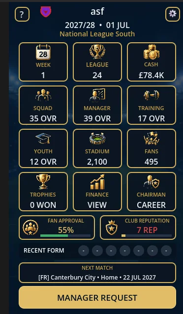
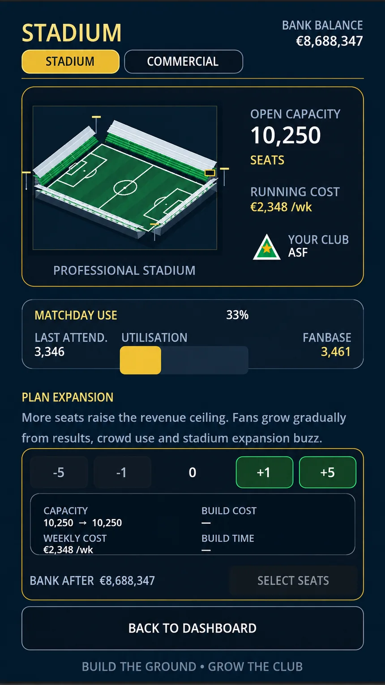

Transfers & contracts
Build your squad through transfers, loans, renewals and carefully managed budgets.
The manager picks the team. You build its future. Take control of contracts, finances, stadiums and the decisions that define your football dynasty.

It's about the big decisions off the pitch — and what they mean for your club season after season.
Build your squad through transfers, loans, renewals and carefully managed budgets.
Choose the coach. Review their plans. Back their vision — or change direction.
Invest in your ground, youth academy and training infrastructure.
Chase promotion, domestic cup glory and continental success.

Back a manager. Take a financial risk. Upgrade your stadium. Build a team that can survive promotion — or start over with a completely different vision.
As your career unfolds, keep an eye out for players who stand apart from the rest.
The next important piece of your team might be more than an ordinary signing.
Keep searching. The most memorable careers are built on exceptional discoveries.
Explore actual screens from Football President — the dashboard, club creation, manager decisions, live matches and the business side of the game.
Follow your club at a glance.
Choose a look for home and away.
Compare candidates and their philosophy.
Understand the person guiding your XI.
Decide which deals get your backing.
See the team your manager picked.
Watch the moments that matter.
The story continues after the whistle.
Track income, costs and the bottom line.
Expand the ground as your club grows.
Images captured from the game during development. Screens and details may change before release.
“YOU ARE NOT THE MANAGER.
YOU ARE THE ONE WHO HIRES HIM.”
Football President is preparing for release on Google Play. The official install link will appear here when the listing goes live.
Independent games. Ambitious ideas.